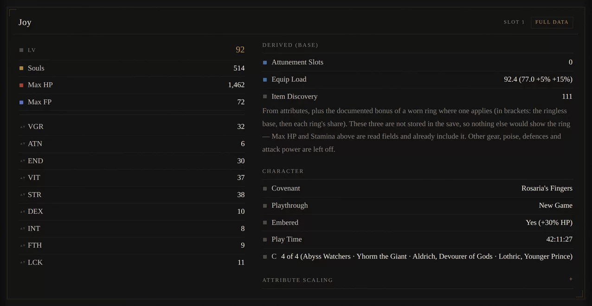
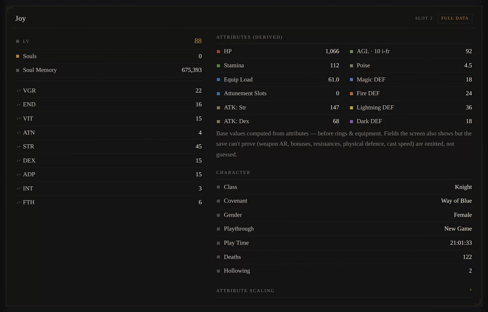
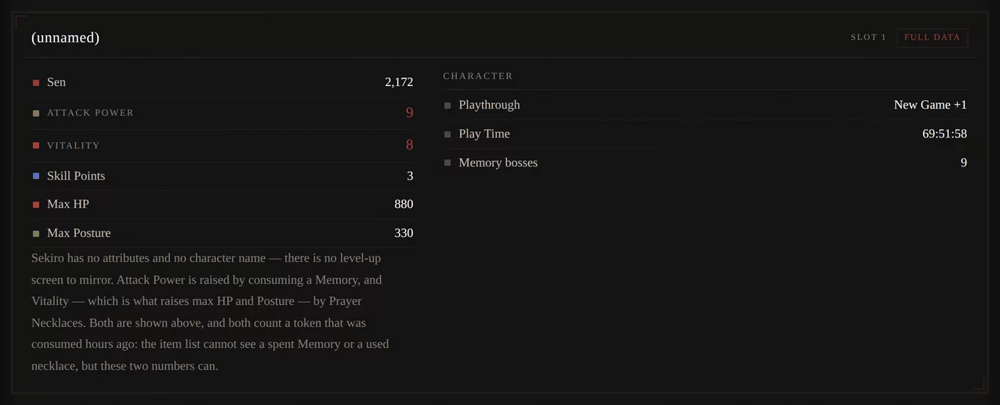
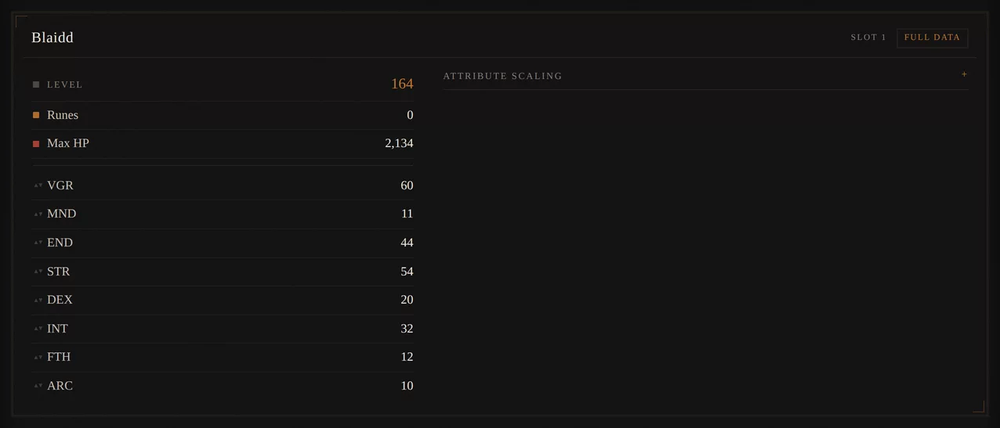
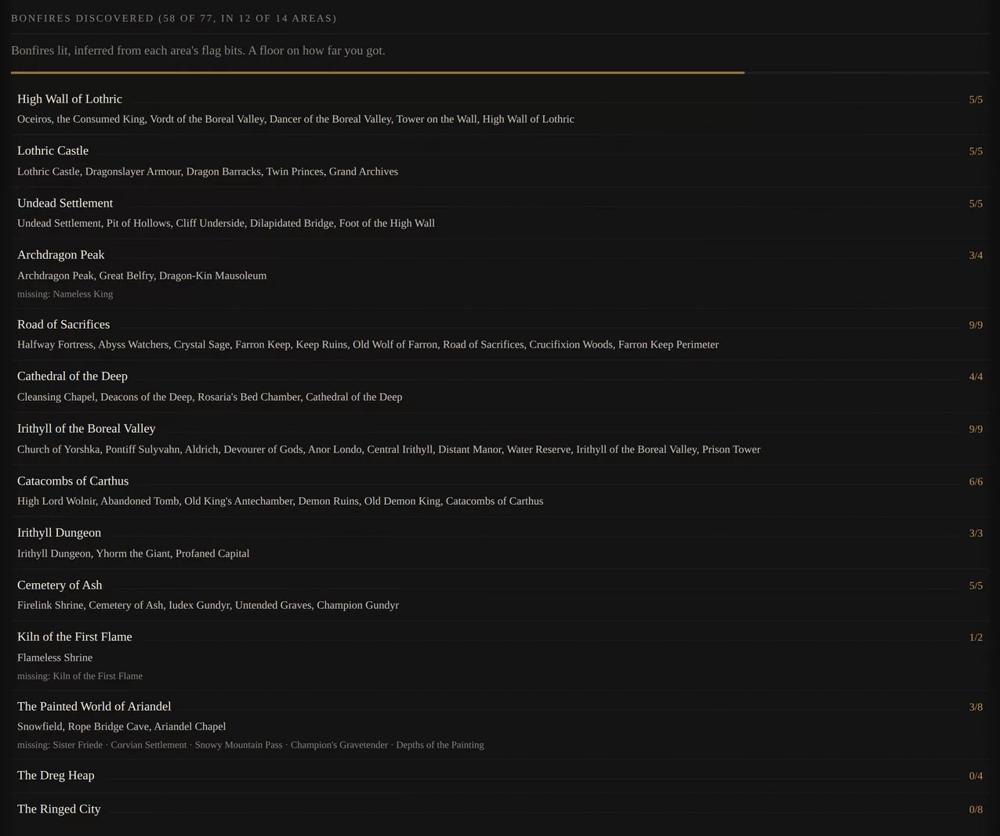
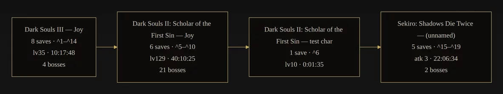

SL2 Analyzer
A Souls save is a locked box. Drop one in and it opens into the screen the game would have shown you: level and attributes, souls held, everything carried, every bonfire lit, and every boss the file can still prove is dead.
What it reads
All seven .sl2 variants. Each one renders in its own status screen,
skinned to that game.
- Dark Souls Remastered. Identity, class, gender, every attribute, souls, humanity, play time, deaths, the full inventory, held boss souls, twelve boss-defeat flags, and all 43 bonfires with how far each one is kindled. Dark Souls is the only game here that records a bonfire you found but never lit, so it is the only one that can tell you.
- Dark Souls: Prepare to Die. The same, at the same depth. Both releases keep the same stat block. Only its position differs.
- Dark Souls II: Scholar of the First Sin. Attributes, class, covenant with rank, gender, hollowing, deaths, play time, and an inventory that names infusions and reinforcement levels. All 77 bonfires by area, and bosses counted from three separate signals that have to agree.
- Dark Souls II, vanilla. The same depth as Scholar. The two releases differ by one encryption key and nothing else.
-
Dark Souls III. The deepest read here. Attributes, souls,
play time, embered state, NG+, the full inventory with infusions and
+N, all 77 bonfires by name, bosses from two independent flag sets, covenants joined, rewards from 57 NPCs, which Lords of Cinder are on the throne, and 426 world items picked up across six areas. It also tells you which of the bosses still alive you can reach right now. - Sekiro. The odd one out. No name, no attributes, no levelling, because the game has none of them. What it does have is the one thing nothing else here can do: Attack Power rises by exactly one per Memory consumed, so a boss whose token you spent hours ago is still counted. Play time, journey, Sen, max HP and Posture, everything carried, key items, the storage box, boss kills and Sculptor's Idols from their own event flags. Both flag sets reset when you start a new journey, so an NG+ save honestly reports fewer than the character earned.
- Elden Ring. Identity, attributes and runes in full. Weapons, armour and ashes named by type, so armour can never come back as a weapon. Remembrances held, and the bosses they prove dead. Talismans, spells and goods sit in a part of the save that moves between patches and is not parsed, so that item list is partial. The page says so where the list is.
A slot drops to inventory only rather than print an attribute it cannot verify. A save holding several characters gets a tab each, and every export button writes the whole file: every slot, not the one you happen to be looking at.
What that looks like
Real saves, read by this page. Each one keeps its own game's colour, sampled off that game's own menus. Click any of them for the full image.
{kind=link}

{kind=link}

{kind=link}

{kind=link}

{kind=link}

{kind=link}

How it works
A .sl2 is one packed archive of blocks. Most of them are encrypted, one
per character, and a few more hold the world. The page unpacks the archive, decrypts
each block with the key the game itself ships, and reads fields off positions the
community mapped over years.
Parsing runs on a background thread, so a nine megabyte save does not freeze the page, and only the tables for the game you dropped get fetched. After the first visit it works offline. The page, its code, its font and the tables it has already used are cached, so you can read a save on a plane.
There are three ways to take the reading with you. Copy Markdown is the one to
paste into an LLM, since it cannot open a .sl2 but reads Markdown fine.
Download .md is that same text as a file. Download .json is the same
data written for a program, against a published schema, and
byte for byte identical to what the command line tool writes. One thing to know before
you consume it: a field is there only if it was read. Dark Souls III keeps no death
counter, so a DS3 character has no deaths key at all. Not a zero, not a
null.
Every game hides its data somewhere else
- Dark Souls II. Vanilla and Scholar use different keys over an identical layout, so the page tries both and reads whichever one opens. Which release you have is decided by which key works, not by a guess. Bonfires and boss kills come from a second world block the game keeps well away from the character.
- Dark Souls, both releases. The character block moves as the save grows, so a fixed offset is worthless. Remastered is found by a marker that always sits beside it. Prepare to Die has no such marker, so it is found by your character's own name.
- Dark Souls III. The stats move between patches, so the block is located by content instead of position: the nine numbers that add up to your level. That is the game's own formula, so a false match is close to impossible.
- Elden Ring. The same trick with eight numbers, plus every owned item read straight out of the game's item array.
- Sekiro. The easy one, for once. Nothing is encrypted and nothing moves between patches. Each item record carries a type code beside its ID, which is why a piece of armour can never come back named as a weapon.
Two rules, and neither one bends
It never prints a number it cannot verify. If a stat block fails its own check, that slot drops to inventory only and the attributes are simply gone. A missing field costs you nothing. A wrong one quietly tells you your character is something it is not, and you would have no way of knowing. So the field goes.
Progress is a floor, not a ceiling. A boss counts as dead only when the save still proves it: the soul sitting in your pack, a defeat flag, or a place past it you could not have reached with the boss alive. Kill a boss, spend the soul, leave no flag and no gate behind you, and it stays off the list. The tool under-claims on purpose. Everything it shows you happened. There is simply more that it cannot see.
Changelog
Unarmed and the bare Head,
Body, Arms and Legs no longer appear in an
Elden Ring inventory. They are what the game puts in an empty equipment slot, so every
character was carrying all five
0x30, not
0x20. Entries vary in length and take their stride from the id just read,
so the old start drifted through the whole array. 148 of 182 test characters were
reading item categories that do not exist
5xxxxxxx pickup flags live
at category k = map_k + 66, which makes 589 of 826 curated rows readable
0x34498. Ten candidates were
killed by arithmetic before that one survived
sl2 package, with
sl2_to_md.py left as the entry point
Type and colour
The whole page is set in one face: adobe-garamond-pro if you have it, and Georgia if you do not. Adobe Garamond Pro is what FromSoftware actually uses for the Dark Souls games and for Sekiro's Latin text. It is not redistributable, so it sits first in the stack and resolves only when it is already installed on your machine or an Adobe Fonts kit is added to the page. Georgia carries everyone else. Nothing is downloaded either way, which is part of why this page still makes no cross-origin request at all.
Elden Ring uses Agmena, which is a Garamond with squarer serifs. Demon's Souls is closer to Pinnacle JY or ITC Galliard. Sekiro's decorative Japanese, including the 死 pop-up, is 白舟極太楷書. None of those are free either, and the fallback for all of them is the same system serif.
Where the colours come from
Every accent here is the colour that game prints its own overlays in, measured by the
FromSoft Image Macro Creator.
Dark Souls lights a bonfire in rgb(255,228,92), Dark Souls II in
rgb(255,177,68), Dark Souls III in rgb(255,206,86). Elden
Ring finds a lost grace in rgb(220,135,56). Sekiro writes in white and
kills you in rgb(183,48,44). They are used flat and pulled down a stop
for a dark room, as rules and values and one filled chip, with none of the bloom the
games draw behind their text. The colour is there to tell you which game you are
reading. Nothing else has to.
The grain on the page and on every panel is one patch of fractal noise drained of colour, which is the same trick the macro creator uses on its own boxes.
This project
- sl2-analyzer on GitHub. The same reader as a Python command line tool, which also writes the combined document across a whole folder of saves.
- schema.json. What the JSON export is written against.
- Documentation. Generated from the source.
- Issues. If a field reads wrong, say which game, which patch, and what the save shows in game. A wrong field is a bug. A missing field is usually the tool refusing to guess.
Fan tools worth your time
- FromSoft Image Macro Creator. Puts convincing YOU DIED text on any image. This site's colours and its grain came from there.
- Area Name Generator. The same author's earlier toy, for randomised FromSoft area names.
- The Death Generator. Pixel accurate image macros from a pile of classic games.
- r/fromSoftMacroCreator. Where people post what they make with it.
The work this stands on
- SoulsFormats. The format library every FromSoft tool leans on, this one included.
- Paramdex and the soulsmodding wiki. ID tables and the event flag arithmetic.
- DSMapStudio and Smithbox. Map and param editors. Useful when you want to see what a flag is actually attached to.
- UXM and WitchyBND. Unpacking the game archives.
- DarkScript3. Reads the event scripts, and its EMEDF is where the instruction definitions come from.
- SoulSplitter. Speedrun splitter, and a well kept list of boss, bonfire and item flags.
- souls_givifier. Where the save encryption keys and the block layout are written down.
- The Grand Archives tables. Cheat Engine tables for DS3 and Elden Ring, useful as ID dropdowns.
- ER-Save-Editor. Where the Elden Ring save structure is documented.
- Fextralife and the Dark Souls wikidot. Derived stat formulas, bonfire to area mappings, boss ordering.
- SpeedSouls. Route knowledge, which is what tells you a place is unreachable with a boss alive.
Disclaimer
This is a fan project and it is not affiliated with anyone. DARK SOULS, SEKIRO: SHADOWS DIE TWICE and ELDEN RING belong to FromSoftware, Bandai Namco Entertainment and their respective owners. Item, boss, bonfire and area names appear here as lookup tables so that a save file can be read at all, which is interoperability, not republication. No game assets ship with this page and nothing here helps you obtain a game.
Your save
Everything happens in this tab. The file is read with the browser's own file API, parsed in a worker, and never uploaded. There is no server to upload it to, and the page makes no cross-origin request of any kind. It is also opened read only, so nothing is ever written back to your save.
Licence
The code is MIT. Every line of the Python and the JavaScript was written for this project, and no third-party source is bundled. Two libraries are vendored rather than loaded from a CDN, so the page stays self-contained: Mermaid (MIT) for the charts in the combined view, and doxygen-awesome-css (MIT) for the generated documentation.
Where the facts came from
The keys, the offsets and the flag IDs were worked out by other people first, and they deserve the credit whether or not a licence demands it. Three of those projects are GPL-3.0, which is worth addressing rather than hoping nobody checks.
- GPL-3.0. souls_givifier for the DSR, DS3 and Elden Ring keys and the block layout. SoulsFormats for the vanilla DS2 key. SoulSplitter for DS3 and Sekiro flag IDs. SoulsRandomizers for the DS3 item lot annotations.
- MIT. alfizari's DS3 and DS2 save editors for stat offsets and item tables, dsfp for the PtDE roster record, and SimpleSekiroSavegameHelper for the Sekiro container layout.
- Apache-2.0. alfizari's Dark Souls Remastered and Sekiro editors, for offsets, item type nibbles and English item names.
- No licence stated. ER-Save-Lib and ER-Save-Editor for the Elden Ring structure, Paramdex and the soulsmodding wiki for ID sets and the flag formula, the Grand Archives Cheat Engine tables, and the wikis for derived stat formulas and area mappings.
- Colour and type. The FromSoft Image Macro Creator for which typeface each game uses and for the measured RGB of its overlays.
No GPL-licensed code is in this repository. What was taken from those projects is factual information about a file format FromSoftware defined. A key is a number. It is discovered, not authored, and it is the same number no matter who writes it down. "The death counter is a uint32 at +104" is a fact about Dark Souls II, not a creative work belonging to whoever measured it. Copyright protects expression, not facts, which in US law is the holding of Feist v. Rural Telephone: an exhaustive compilation of facts with no creative selection is not protectable, and sweat of the brow earns no copyright however much of it went in. The flag lists used here are exhaustive by nature, every bonfire and every boss, so there is no creative selection to infringe.
Two caveats, stated plainly, because the point is honesty rather than reassurance. The EU's sui generis database right is a separate regime from copyright and protects investment in compiling a database, so a European reading could differ from the American one. And none of this is legal advice. It is the reasoning behind the choice, offered so you can check it rather than trust it. The full version, with the per-project table and the list of files to delete if you want to avoid the question entirely, is in THIRD-PARTY-NOTICES.md.